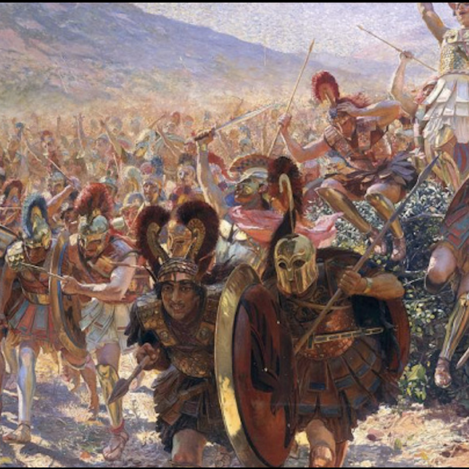

Year 12 Ancient History
The Greek
World 500–440 BC
Historical Period
Syllabus
Outcomes
AH12-1
Accounts for the nature of continuity and change in the ancient world
AH12-2
Proposes arguments about the varying causes and effects of events and developments
AH12-3
Evaluates the role of historical features and individuals in shaping the ancient world
AH12-4
Analyses the different perspectives of individuals and groups in their historical context
AH12-5
Assesses the significance of historical features, individuals, events and developments of the ancient world from the period being studied
AH12-6
Analyses and interprets different types of sources for evidence to support an historical account or argument
AH12-7
Discusses and evaluates differing interpretations and representations of the ancient past
AH12-8
Plans and conducts historical investigations and presents reasoned conclusions, using relevant evidence from a range of sources
AH12-9
Communicates historical understanding, using historical knowledge, concepts and terms, in appropriate and well-structured forms
Explore